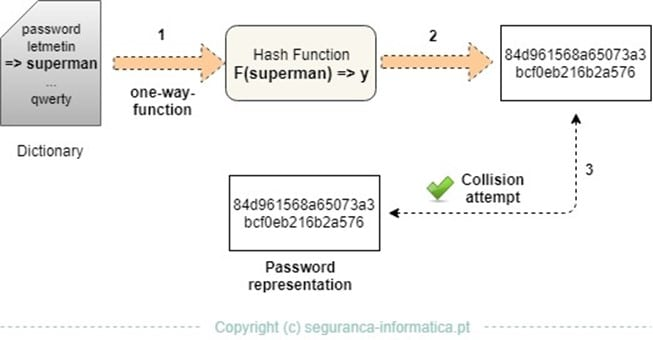

4. Passwords
Types of Attacks:
• Guess the Password
• Crack the Hash
A hash can be cracked using a CPU
or a GPU
• Pass the Hash This type of attack allows us to use LM & NT hashes to gain
access to a remote Windows host without having to know the actual password: we will only use the hash.
If we
get get the hash for user A on System A and we know that user A also has access to System B. We can run payloads on
System B even if System B is immune from any exploit
Passwords are usually
stored inside files or databases.
Passwords in
computer must be stored in an
encrypted form; this prevents a
malicious local user from getting to know other users passwords.
Encryption of the password
must use
one-way algorithm, so is not possible to know the password
starting from its encrypted form.
Cryptographic hash functions are used to
map a clear-text password to its encrypted form.
The
OS does
not need to know the clear-text password,
it takes the password, hashes it and then tries to match the result against the saved hash in the password
database
Tool to save securely
password:
•
Keepass•
Bitwarden•
https://pwsafe.org/How much is secure a password:
https://howsecureismypassword.net/